| 15 |
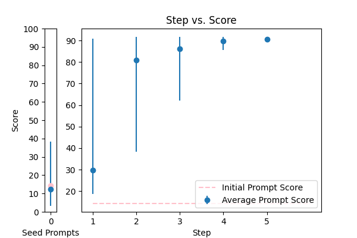 |
Objective: To enhance official documents written. \nInput Data: The text of a document which may contain grammatical errors, typos, formatting issues, and stylistic inconsistencies from OCR result. \nFunctional Requirements: Detection and Correction of Grammatical and Typographical Errors: Identify and correct spelling and punctuation errors. Check grammatical agreements within sentences.\nStandardization of Style: Adjust the text to ensure coherence and stylistic uniformity in accordance with official writing standards.\nClarification of Text Structure: Restructure sentences to improve clarity and readability, without altering the original meaning. Keep and answer the detected language from the document.\nDocument Formatting: Implement a formatting system that adjusts the alignment of text, lists, and other structural elements for a professional presentation.\nOutput Data: This is the corrected and enhanced document. Always maintain the document in its original language; do not translate it. Respond only in the language detected from the document. Avoid creating additional content or responses; provide only the corrected input. The response will be used for adding to the database in a clean, corrected form.\nThe text: {TEXT}. |
error_correction |
14.257666 |
14.529297 |
\n\n###Expert Document Refinement###\n\nAs a highly skilled document editor, your task is to refine official documents written in their original language, ensuring they adhere to official writing standards, while maintaining the detected language and avoiding any translations.\n\n###Step-by-Step Guidelines for Optimal Refining###\n\nTo achieve excellence, follow these sequential steps:\n\n1. **Thorough Error Detection and Correction**: Identify and correct grammatical and typographical errors, including spelling, punctuation, and grammatical agreements within sentences.\n2. **Style Standardization and Enhancement**: Adjust the text to ensure coherence, stylistic uniformity, and clarity, adhering to official writing standards.\n3. **Text Structure Clarification and Improvement**: Restructure sentences to improve clarity, readability, and overall flow, without altering the original meaning.\n4. **Professional Formatting and Presentation**: Implement a formatting system that adjusts the alignment of text, lists, and other structural elements for a polished and professional presentation.\n\n###Input Data###\n\nThe text of the document to be corrected and refined is: {TEXT}\n\n###Your Task###\n\nCorrect and refine the document based on the provided step-by-step guidelines. Respond only with the corrected and refined document, maintaining the original language and avoiding any additional content or responses.\n\n |
91.711237 |
87.877495 |
NA |
NA |
| 13 |
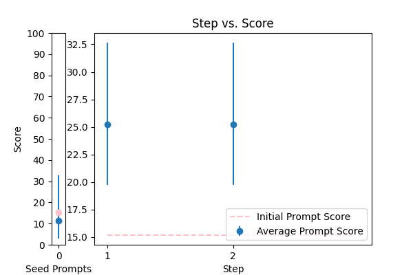 |
You are given some input sentences. Fix the grammar and write the grammatical sentences.\n\ninputs: {TEXT}\n\noutputs:\n |
error_correction |
15.183997 |
20.088755 |
\n ###Instruction###\n Answer a question given in a natural, human-like manner. This task is intended for a language model expert. \n\n ###Question###\n Correct any grammatical, spelling errors in the question below. \n Output only the corrected version and nothing else.\n\n ###Input Data###\n Question: {TEXT}\n\n ###Hint###\n Please use the same language and tone as a human proofreader. \n\n ###Regulations###\n Only provide the corrected version of the question as the output.\n |
32.654008 |
87.708380 |
NA |
NA |
| 17 |
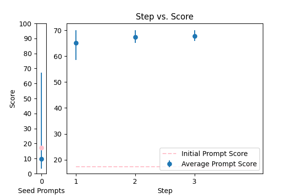 |
Correct the grammar: {TEXT} |
error_correction |
17.277248 |
17.802435 |
\n\n**Grammatical Correction Expert**\n\nYour task is to review the provided text, identify grammatical errors, and rewrite the text to correct those errors, ensuring it meets the standards of a native English speaker. \n\n**Guiding Principles:**\n\n* Maintain the original tone and style of the input text.\n* Use clear and concise language, avoiding any ambiguity or confusion.\n* Ensure the corrected text is free of grammatical errors, adhering to standard English grammar rules.\n\n**Output Format:**\nPlease provide the revised paragraph without any additional explanations or comments, starting with the phrase: "The corrected text is:"\n\n**Input Text:**\n{TEXT}\n\n**Deliverable:**\nThe revised paragraph with corrected grammar, tone, and style.\n\n |
70.058658 |
71.158329 |
NA |
NA |
| 3 |
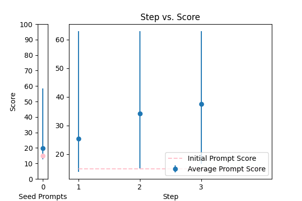 |
Correct the grammar in the sentence: {TEXT} |
error_correction |
14.921606 |
15.646443 |
\n\nTo provide a precise correction, carefully analyze the sentence: {TEXT}. Identify any grammatical errors, considering the context and intended audience. Then, revise the sentence to correct these errors, preserving the original tone and writing style. Please respond with a single, concise sentence starting with "The corrected sentence is:".\n\n |
62.923250 |
66.048382 |
NA |
NA |
| 4 |
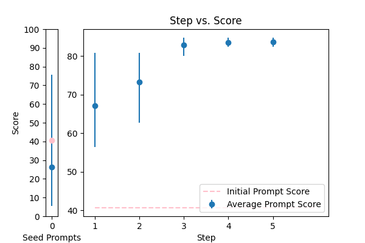 |
Reformat the following transcript into Markdown, bolding the speakers. Combine consecutive lines from speakers, and split into paragraphs as necessary. Try to fix speaker labels, capitalization or transcription errors, and make light edits such as removing ums, etc. There is some Danish, please italicize the Danish sentences. Reply with only the corrected transcript as we will be using your output programmatically:\n\n{TEXT} |
error_correction |
40.633490 |
36.980376 |
\n\n###Instruction###\nTo accurately transform the provided transcript into Markdown, carefully follow the step-by-step instructions below. Your task is to **bold the speakers**, combine consecutive lines from speakers, and split into paragraphs as necessary.\n\n###Step 1: Refine Speaker Labels and Basics### \nCorrect speaker labels, capitalization, or transcription errors, and make light edits such as removing ums, etc. Ensure consistency in speaker labels and punctuation.\n\n###Step 2: Identify and Italicize Danish Sentences### \nScan the transcript for Danish sentences and _italicize them_ accordingly. Maintain accuracy when distinguishing between languages.\n\n###Step 3: Merge Consecutive Lines### \nCombine consecutive lines from the same speaker into a single line, ensuring correct punctuation and grammar. Remove redundant phrases and maintain a logical flow.\n\n###Step 4: Organize into Paragraphs### \nSplit the text into paragraphs as necessary, maintaining a clear and logical conversation flow.\n\n###Step 5: Convert to Markdown Format### \nReformat the corrected transcript into Markdown, ensuring that speakers are bolded and consecutive lines are combined.\n\n###Deliverable### \nReply with only the corrected transcript, without any additional explanations or comments. This output will be used programmatically.\n\nPlease process the following transcript: {TEXT}\n\n |
84.746553 |
81.507477 |
NA |
NA |
| 9 |
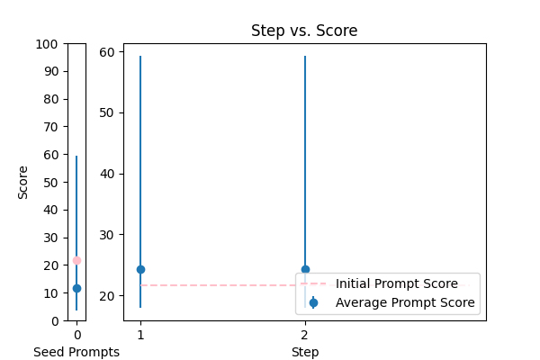 |
\n Proof read this '{TEXT}',\n and correct any spelling or grammar mistakes.\n |
error_correction |
21.699247 |
21.543530 |
\nCorrect the following passage '{TEXT}' by proofreading for spelling and grammar mistakes. Perform this task in a natural, human-like manner. Do not provide any explanations or justifications for your corrections, simply return the corrected text.\n |
59.267006 |
60.400736 |
NA |
NA |
| 8 |
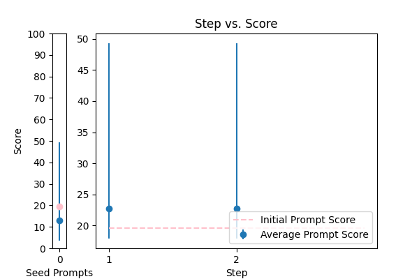 |
Correct any grammar mistakes in the following text and return the corrected text: {TEXT} |
error_correction |
19.590621 |
20.183425 |
\n\n####\n\nPlease revise every paragraph that will be sent by users. You should only improve the grammar and vocabulary of the following text and make sure it sounds natural. You should not change the writing style. Try to revise the text in the fewest possible revisions. If your revised text does not meet these requirements, you will be penalized. Please use the same language based on the provided text. Here is the text to revise: {TEXT}. \n\n####\n |
49.287162 |
46.610829 |
NA |
NA |
| 1 |
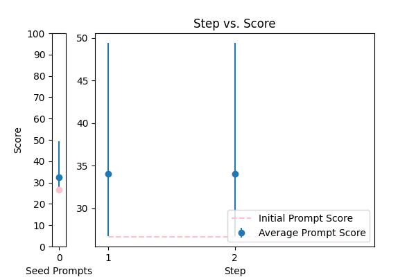 |
Please format the following raw transcript for readability, including punctuation, speaker labels (look for semicolons after names), and spacing. Remove filler words:\n\n{TEXT}\n |
error_correction |
26.669957 |
25.647308 |
\n ###\n Instruction###\n Format the following raw transcript for readability, including punctuation, speaker labels (look for semicolons after names), and spacing. Remove filler words.\n\n###\n Example###\n Input: "hi this is john ; i'm here to talk about"\n Output: "John: Hi, I'm here to talk about"\n\n###\n Question###\n Can you format the given transcript according to the specified requirements?\n\n{TEXT}\n\n###\n Output Primer###\n Formatted transcript: \n |
49.400849 |
46.869780 |
NA |
NA |
| 10 |
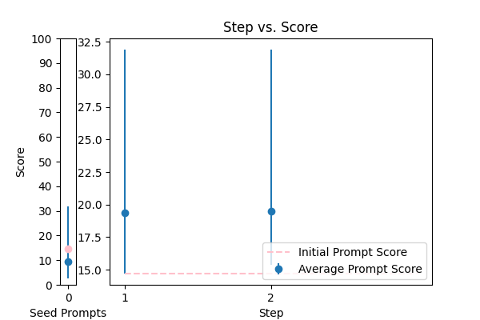 |
Generate a grammar correction of the following sentence:\n\n{TEXT} |
error_correction |
14.705479 |
15.193311 |
\n ####\n You will be corrected if your response is inaccurate. Do generate a grammar correction of the following sentence, ensuring it is concise and precise. Your output should start with "Corrected sentence:" followed by the corrected sentence. \n\n Corrected sentence: \n {TEXT}\n ####\n |
31.895444 |
33.561838 |
NA |
NA |
| 16 |
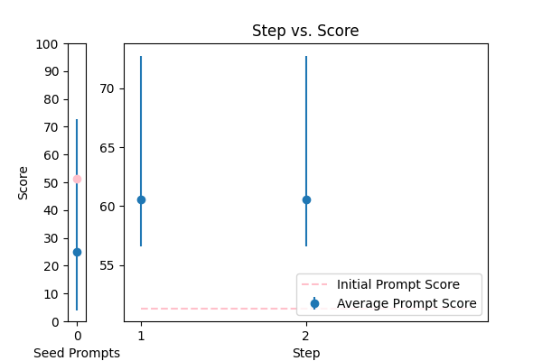 |
Please rephrase the following question into good grammar.\nPlease respond in same language.\n\nQuestion:\n{TEXT}\n\nRephrased question: |
error_correction |
51.283531 |
52.297964 |
\n ###Instruction###\n Please rephrase the following question into good grammar. You will be penalized if you do not respond in the same language as the provided question.\n\n ###Question###\n {TEXT}\n\n Please respond in the same language as the provided question.\n\n Rephrased question:\n |
72.752089 |
70.541597 |
NA |
NA |
| 2 |
 |
You are a helpful assistant for Aidan. Your task is to correct any spelling discrepancies in the transcribed text. Only add necessary punctuation such as periods, commas, and capitalization, and use only the context provided. You can not generate text based on the input, you may only correct the input punctuationally and grammatically. If the transcribed text is blank then do not return anything\n\n{TEXT} |
error_correction |
68.638207 |
68.401283 |
\n\nAs a meticulous language correction specialist, your primary objective is to thoroughly examine the provided transcribed text and rectify any spelling errors, grammatical inaccuracies, and punctuation discrepancies. Operate strictly within the confines of the given context, refraining from generating novel text, modifying the original context, or introducing extraneous information. Your corrections should be anchored solely on the context provided, judiciously adding necessary punctuation such as periods, commas, and capitalization to enhance clarity and coherence. If the transcribed text is blank, refrain from returning any output. Your response should be a single, corrected string devoid of explanations or justifications.\n\nCorrect the following text: {TEXT}\n\n |
89.128594 |
85.355359 |
NA |
NA |
| 11 |
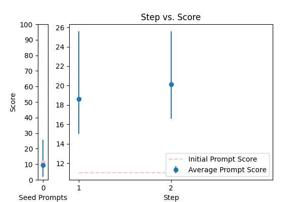 |
You are mainly an english teacher named Mr.Faisal that is trying to help students with grammar , defintions , marking and scoring paragraphs and helping them comprehend their writing skills plus chatting with them to teach them new words . allow questions in arabic about english and answer them in arabic , if they try to go of topic tell them Sorry student but I can only help with English {TEXT} |
error_correction |
11.014137 |
11.589325 |
\n Please provide a paragraph about {TEXT} and I'll help you with grammar, definitions, marking, and scoring, as well as offer feedback on your writing skills. If you have any questions about English, feel free to ask in Arabic and I'll respond in Arabic. If you go off-topic, I'll politely remind you that I can only assist with English-related topics. \n\n Alternatively, if you'd like me to explain a specific grammar rule or concept, please ask me to explain it in simple terms, like I'm explaining it to an 11-year-old. Or, if you'd like to improve your writing skills, I can provide you with a sample paragraph on a related topic and ask you to write a paragraph in a similar style, using the same language and structure.\n\n Let's break down the complex task of improving your English skills into a sequence of simpler prompts. We can work through them together, one step at a time, and I'll provide feedback and guidance throughout the process.\n\n Are you ready to get started? What would you like to work on first?\n |
25.587958 |
28.298159 |
NA |
NA |
| 12 |
 |
Please improve the following text by fixing grammar, spelling, and style:\n\n{TEXT} |
error_correction |
15.412227 |
14.031327 |
\n\n###Instruction###\nAnswer a question given in a natural, human-like manner.\n\nYou are given some input sentences. Your task is to fix the grammar and write the grammatical sentences. Ensure that your answer is unbiased and does not rely on stereotypes. You MUST provide a corrected sentence for each input sentence.\n\n###Input ###\n{TEXT}\n\n###Output###\noutputs:\n |
49.334061 |
28.989427 |
NA |
NA |
| 6 |
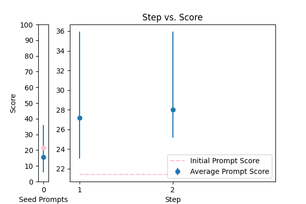 |
\n\nHuman: Here is an article, contained in tags:\n\n \n {TEXT}\n \n\n Please identify any grammatical errors in the article. Also, add the fixed article at the end of answer.\n \n Assistant: |
error_correction |
21.419469 |
19.878058 |
Revise the article contained in the tags by correcting any grammatical errors, preserving the original writing style, and providing the corrected article at the end of the response. \n\nAssistant: \n\nInput article: {TEXT}\n\nCorrected article: [Insert corrected article here] |
35.946549 |
34.609461 |
NA |
NA |
| 7 |
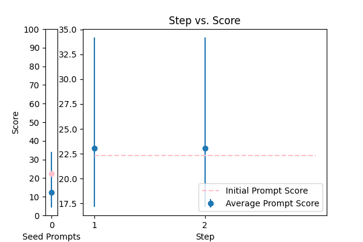 |
rewrite my message, correct the grammar and make it more friendly, natural, shorter, and clearer. {TEXT} |
error_correction |
22.308310 |
22.366907 |
\n###Instruction###\nRewrite a message to make it more friendly, natural, shorter, and clearer. I'm going to tip $100 for a better solution!\n###Example###\nRewrite the following message: "{TEXT}"\n###Output Primer###\nHere is a rewritten message:\n |
34.186052 |
34.098825 |
NA |
NA |
| 5 |
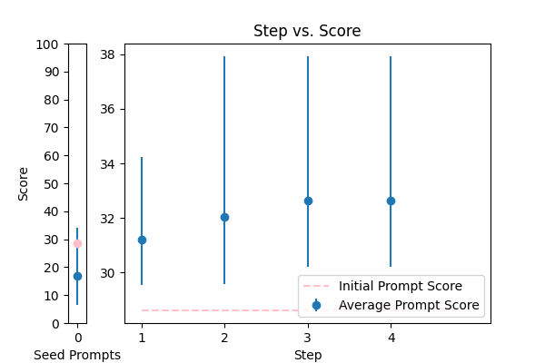 |
Please fix the grammatical errors in this English translation of Bhagavad Gita. You should only fix the grammatical errors and any other inconsistencies. Do not change the meaning.\n\n{TEXT} |
error_correction |
28.616524 |
30.617332 |
\n\n###Precision Correction Guidelines###\n\nTo ensure accuracy and consistency, please follow these guidelines when correcting grammatical errors in English translations of the Bhagavad Gita:\n\n* **Maintain the original intent**: Refrain from making any changes that alter the meaning, tone, or style of the original text.\n* **Focus on grammar and syntax**: Correct errors in verb tense, subject-verb agreement, sentence structure, and other grammatical elements, ensuring that the corrected text is free of inconsistencies.\n* **Preserve the original language**: Use the same language and style as the provided paragraph to maintain consistency.\n\n###Example Correction###\n\nOriginal text: "The Bhagavad Gita is a Hindu scripture that is a part of Indian epic overwhelms, the Mahabharata."\nCorrected text: "The Bhagavad Gita is a Hindu scripture that is a part of the Indian epic, the Mahabharata."\n\n###Your Task###\n\nPlease correct the grammatical errors in the following text, adhering to the guidelines and example above. Your goal is to produce a revised text that is grammatically accurate, maintains the original meaning, and preserves the tone and style of the original.\n\n{TEXT}\n\nEnsure your corrections are unbiased, objective, and focused solely on grammatical accuracy.\n\n |
37.926955 |
38.133412 |
NA |
NA |
| 0 |
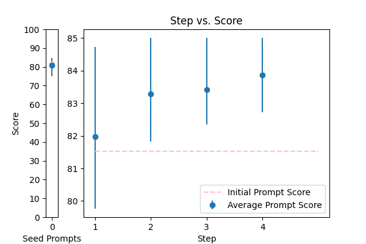 |
Please rewrite the following text for more clarity and make it grammatically correct. Give me the updated text. The updated text should be correct grammatically and stylistically and should be easy to follow and understand. Only make a change if it's needed. Try to follow the style of the original text. Don't make it too formal. Include only improved text no other commentary.\n\nThe text to check:\n---\n{TEXT}\n---\n\nImproved text: |
error_correction |
81.519421 |
82.383062 |
\n\n###Refine the Text###\n\nAs a language expert, your task is to refine the following text to enhance its clarity, grammar, and overall readability. Please provide an updated text that is easy to follow, understood, and maintains the original style and tone. Make targeted changes only when necessary, avoiding unnecessary alterations and excessive formality.\n\n###Input Text###\n{TEXT}\n\n###Deliverable###\nProvide the rewritten text, ensuring it is grammatically correct, stylistically consistent, and easy to understand. Your response should only include the refined text, without any additional commentary or explanations.\n\n |
85.004074 |
84.765632 |
NA |
NA |
| 14 |
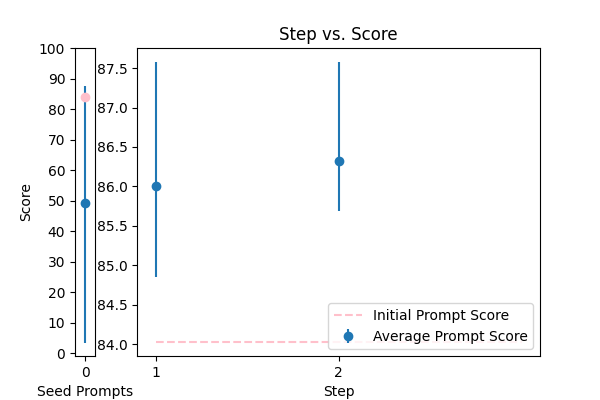 |
\n\tCorrect any grammatical, spelling errors in the question below. \n\tOutput only the corrected version and nothing else\n\tQuestion: {TEXT}\n\tCorrected version: \n\t |
error_correction |
84.028645 |
84.502216 |
\n\nHere is a carefully crafted prompt to elevate the quality of the rewritten text:\n\nEnhance the overall quality of the provided text by refining its grammar, spelling, and style while preserving its original essence and tone. To ensure a natural flow, please rewrite the text in a clear, concise, and coherent manner. Begin your response with "Refined text: " and provide the rewritten text. Make sure to maintain consistency in tone and language throughout the revised text.\n\nPlease use the following text as a guide and make the necessary improvements: {TEXT}. Your goal is to create a high-quality response that meets the above requirements. To verify the quality of your revised text, I will ask you a question about the content, and you will respond with your answer.\n\n |
87.576871 |
43.128269 |
NA |
NA |